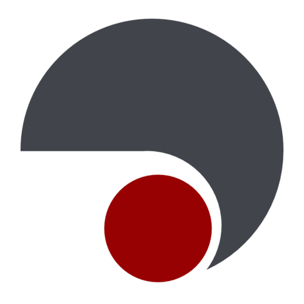

Oct. 3rd 2015
Dirk Thomas, Esteve Fernandez, William Woodall
ROSCon 2015, Hamburg, Germany
void callback(const std_msgs::String::ConstPtr & msg)
{
ROS_INFO("I heard: [%s]", msg->data.c_str());
}
int main(int argc, char * argv[])
{
ros::init(argc, argv, "listener");
ros::NodeHandle node;
ros::Subscriber sub = node.subscribe("chatter", 10, callback);
ros::spin();
return 0;
}
// void callback(const std_msgs::String::ConstPtr & msg)
{
// ROS_INFO("I heard: [%s]", msg->data.c_str());
}
int main(int argc, char * argv[])
{
// ros::init(argc, argv, "listener");
// ros::NodeHandle node;
// ros::Subscriber sub = node.subscribe("chatter", 10, callback);
// ros::spin();
return 0;
}
// void callback(const std_msgs::String::ConstPtr & msg)
void callback(std_msgs::msg::String::ConstSharedPtr msg)
{
// ROS_INFO("I heard: [%s]", msg->data.c_str());
printf("I heard: [%s]\n", msg->data.c_str());
}
int main(int argc, char * argv[])
{
// ros::init(argc, argv, "listener");
rclcpp::init(argc, argv);
// ros::NodeHandle node;
auto node = rclcpp::Node::make_shared("listener");
// ros::Subscriber sub = node.subscribe("chatter", 10, callback);
auto sub = node->create_subscription<std_msgs::msg::String>(
"chatter", rmw_qos_profile_default, callback);
// ros::spin();
rclcpp::spin(node);
return 0;
}
C++11 wherever it makes it easier,
the callback can be a lambda.
The node's name is passed
to the node constructor,
not the global init() function.
The subscriber is templated on the message type.
spin() is called on the node,
not globally.
| Company and product name |
License |
RMW impl. |
Comments |
|
|---|---|---|---|---|
| RTI Connext |
commercial, research |
stat. & dyn. impl. | ||
| PrismTech OpenSplice |
commercial, LGPL |
only version 6.4 is LGPL | ||
|  | TwinOaks CoreDX |
commercial | ||
| eProsima FastRTPS |
LGPL | * | no support for fragmentation yet |
|
| OSRF FreeRTPS |
Apache 2 | ~ | small part of DDS only aiming for emb. devices |
|
class Listener : public Node
{
public:
Listener() : Node("listener")
{
sub_ = this->create_subscription<std_msgs::msg::String>(
"chatter", rmw_qos_profile_default, callback);
}
void callback(std_msgs::msg::String::ConstSharedPtr msg)
{
printf("I heard: [%s]\n", msg->data.c_str());
}
private:
Subscriber::SharedPtr sub_;
}
main() functionBest effort: samples arrive “on time“Reliable: all samples must reach the other endKeep last: only store N samples,Keep all: store all samplesVolatile: no persistenceTransient local: durable data is maintained by the writer
typedef struct RMW_PUBLIC_TYPE rmw_qos_profile_t
{
enum rmw_qos_history_policy_t history;
size_t depth;
enum rmw_qos_reliability_policy_t reliability;
enum rmw_qos_durability_policy_t durability;
} rmw_qos_profile_t;
For more information go to:
www.ros2.org